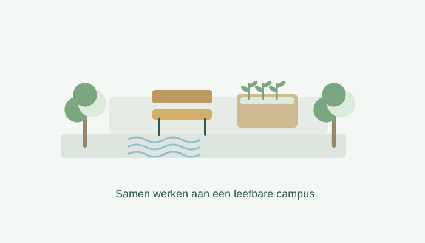

VAN VERKENNING NAAR EEN GROENERE CAMPUS
Ruimte voor
nieuwe ideeën.
Van entrees en routes tot pleinen, gevels en groenzones: verken mogelijkheden voor de hele campus. Vergelijk effecten op natuur, materialen en mensen.

01 / BIBLIOTHEEK
33 onderscheidende richtingen
02 / CAMPUSBREDE VERKENNING
25 voor de gehele campus
03 / IMPACT
3 pijlers per concept
04 / STATUS
Verkennen nog te toetsen
DE IDEEËNBIBLIOTHEEK
Wat past bij jullie campus?
Minimale impactscore
Effect per richting · impact is een inschatting
Geen ideeën binnen deze filters
Verlaag een impactscore, kies een ander thema of bekijk alle richtingen.